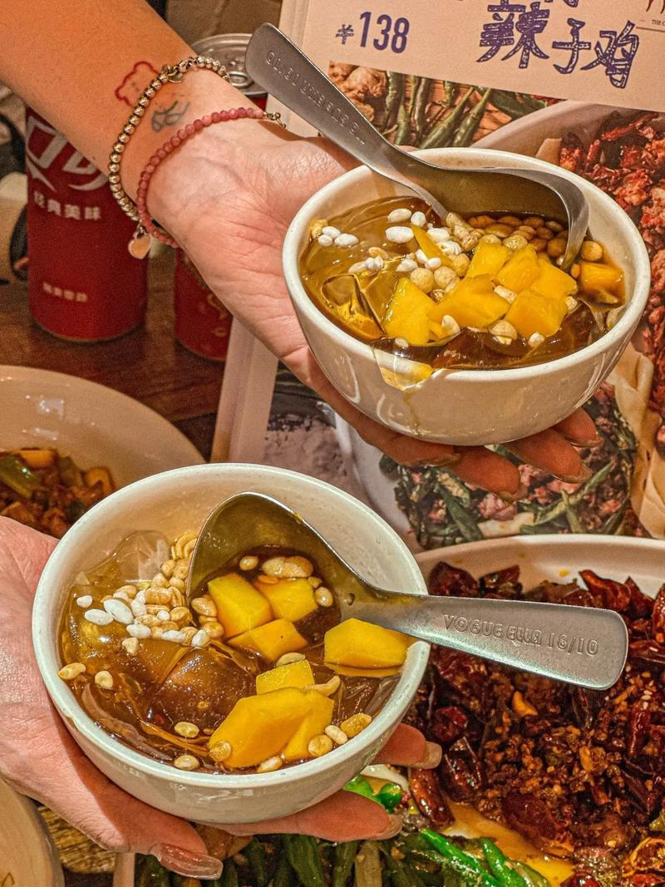

四川料理の世界
四川料理は中国四大料理の一つで、「一菜一格、百菜百味（料理ごとに個性があり、百の料理には百の味わいがある）」と称される豊かな食文化を持っています。盆地特有の気候から麻辣（唐辛子の辛さと花椒のしびれ）を効かせた独自の味が発展し、国内外の多くの人々に愛される深みのあるメニューが魅力です。

代表的な料理
エビや肉、たっぷりの野菜をスパイスや花椒とともに強火でピリ辛に炒め合わせた汁なし鍋料理です。食材の旨味が凝縮されたクセになる強烈な辛さと香ばしさが魅力です。

唐辛子や花椒が効いた真っ赤なスープと、鶏骨や豚骨ベースの白湯スープを同時に味わえる中国の伝統的な鍋料理です。肉や野菜をしゃぶしゃぶのように潜らせて食べ、体の芯から温まります。

柔らかく茹でた鶏肉に、芝麻醤（練りごま）やラー油などを合わせたコクのあるピリ辛ダレをたっぷりかけた前菜料理です。ごまの芳醇な香りと爽やかな辛さが絶妙なバランスです。

もち米や米粉で作られた、ひんやりとした口当たりの伝統的な涼菓（スイーツ）です。黒糖や特製の甘いシロップをかけて食べることが多く、辛い料理を食べた後のデザートにぴったりです。

白キクラゲを氷砂糖やクコの実などと一緒にじっくり煮込んだ、優しい甘さの伝統的デザートスープです。トロッとした食感で美容や健康にも良いとされ、広く愛されています。

味の特徴と6つの辛味
唐辛子や様々なスパイスを多用し、鮮やかな赤色と食欲をそそる香りが特徴。四川料理には代表的な6つの辛味があります：
- 麻辣（マーラー）：花椒を使ったしびれと唐辛子の辛み。
- 香辣（シャンラー）：花椒と唐辛子の香ばしさが強い辛さ。
- 糊辣（フーラー）：唐辛子を強火で炒め焦がした香ばしい辛さ。
- 糟辣（ザオラー）：糟漬け（発酵）唐辛子の奥深い辛さ。
- 酸辣（スアンラー）：お酢と唐辛子が合わさった酸っぱ辛い味わい。
- 鮮辣（シェンラー）：生の青唐辛子を使ったフレッシュな辛さ。
四川料理の歴史
1. 古代・三国時代の起源（〜唐代）
四川料理の歴史は、春秋戦国時代の「巴国」や「蜀国」の時代から始まりました。豊かな穀倉地帯であり「天府の国」と呼ばれたこの地域では、早い段階から豊富な食材と調味料を用いた調理技術が発展しました。
2. 唐辛子の伝来と「麻辣文化」（17世紀〜）
現在の四川料理の代名詞である「辛さ」は、明朝末期から清朝初期にかけてもたらされました。南米原産の唐辛子が伝来すると、元々自生していた花椒の「麻（しびれ）」と結びつき、四川特有の「麻辣」が誕生しました。
3. 多様な味覚の融合と近代（清朝〜現代）
四川省は山に囲まれた盆地で、湿気が高く夏は非常に蒸し暑い気候です。唐辛子や香辛料を多用する食文化は、発汗を促し健康を維持するための人々の知恵として定着しました。
日本の四川料理との比較
日本の中華料理は、日本人の味覚に合わせ油分を控え辛味を和らげる形へと変化していきました。陳建民氏が味噌やケチャップを用いて香辛料の刺激を和らげた麻婆豆腐やエビチリなど、日本独自のスタイルが確立されました。